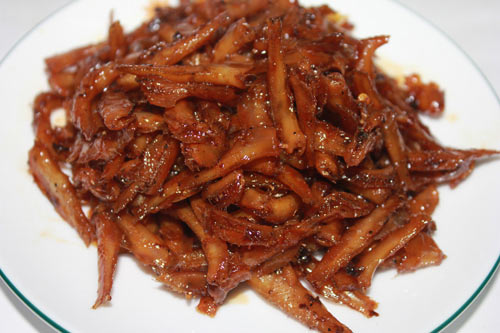

Cá cơm kho thịt

- Khẩu phần 2
- Chuẩn bị 15 phút
- Thực hiện 15 phút
Nguyên liệu
- 200g cá cơm tươi, rửa sạch với nước muối pha
loãng, để ráo
- 150g thịt ba rọi cắt miếng mỏng hoặc cắt sợi
- 1 củ gừng, 1 phần giã nhuyễn vắt lấy nước và 1
phần băm nhuyễn
- 6 tép tỏi băm nhuyễn
- Gia vị: dầu ăn, gói Gia Vị Hoàn Chỉnh - Cá
Kho
Hướng dẫn thực hiện
- Ướp cá
- Cho nước gừng và 1 gói Gia Vị Hoàn Chỉnh - Cá Kho cho món cá kho
ngon đúng điệu. Chờ cho cá thấm trong vòng 15 phút.
- Bắc chảo nhỏ lên bếp, cho chút dầu ăn vào. Dầu nóng, cho thịt ba rọi vào
xào cho săn. Lúc này, mỡ trong thịt ba rọi sẽ chảy ra một ít thì tắt bếp.
Vớt thịt ra khỏi chảo.
- Bật lại bếp, cho dầu trong chảo nóng lên, phi thơm với tỏi và gừng băm.
Sau đó, mở lửa to cho cá cơm và thịt ba rọi vào chiên sơ. Và với gói
Gia Vị Hoàn Chỉnh - Cá Kho đã ướp cá ngay từ đầu thì không cần phải nêm nếm
gì thêm. Hạ nhỏ lửa để cá kho cạn từ từ.
- Múc cá cơm kho ra dĩa, rắc tiêu, dọn kèm cơm trắng.